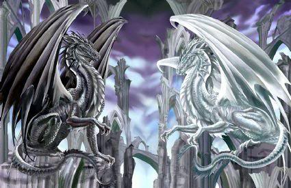
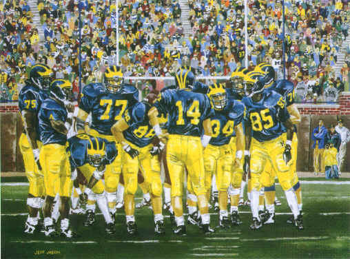
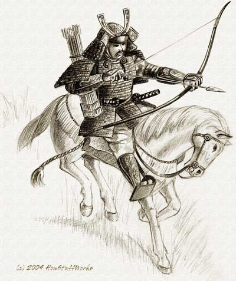
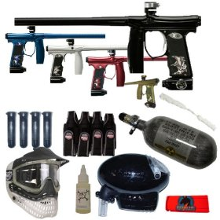

Dragons are my favorite mythical creachers because they are amazing in how they fly and how they can breath fire. |
 |
This is a picture that i find really funny. |
|
Star wars is my favorit movie series because it came out im the order 4th 5 th 6th 1st 2nd and 3rd not 1st 2nd 3rd 4th 5th 6th and i really like the clone arnoe in the picture those are clones | |
modern war fair is another of my favorite games because it shows weapons for 2000-2010 |
|
Michigan is my favorit college foot ball team. the pepole in blue and yellow are the michigan foot ball players |
 |
This is a picture of a samurai from a 1,000 years ago |
 |
This a picture of ninjas. ninjas are from long ago. |
|
This is paintball equipmenet. |
 |
Halo 3 is one of my favorite games because it is based on space and the future how the earth is being attacked by an alien race called the convenet but the human were able to win the war |